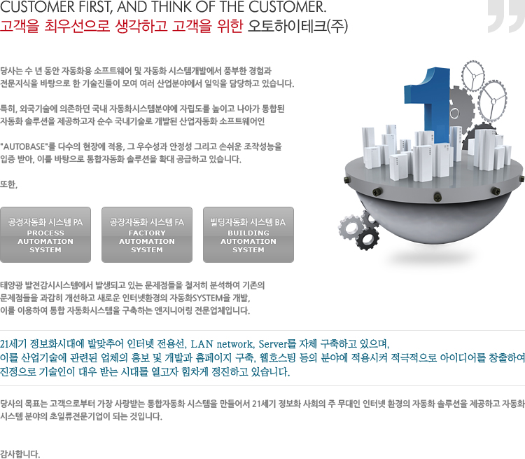

고객을 최우선으로 생각하고 고객을 위한 오토하이테크(주) 당사는 수 년 동안 자동화용 소프트웨어 및 자동화 시스템개발에서 풍부한 경험과 전문지식을 바탕으로 한 기술진들이 모여 여러 산업분야에서 일익을 담당하고 있습니다. 특히, 외국기술에 의존하던 국내 자동화시스템분야에 자립도를 높이고 나아가 통합된 자동화 솔루션을 제공하고자 순수 국내기술로 개발된 산업자동화 소프트웨어인 'AUTOBASE'를 다수의 현장에 적용, 그 우수성과 안정성 그리고 손쉬운 조작성능을 입증 받아, 이를 바탕으로 통합자동화 솔루션을 확대 공급하고 있습니다. 또한, 공정자동화 시스템 PA(Process Automation System) / 공장자동화 시스템 FA(Factory Automation System) / 빌딩자동화 시스템 BA(Building Automation System) 태양광 발전감시시스템에서 발생되고 있는 문제점들을 철저히 분석하여 기존의 문제점들을 과감히 개선하고 새로운 인터넷환경의 자동화SYSTEM을 개발, 이를 이용하여 통합 자동화시스템을 구축하는 엔지니어링 전문업체입니다. 21세기 정보화시대에 발맞추어 인터넷 전용선, LAN network, Server를 자체 구축하고 있으며, 이를 산업기술에 관련된 업체의 홍보 및 개발과 홈페이지 구축, 웹호스팅 등의 분야에 적용시켜 적극적으로 아이디어를 창출하여 진정으로 기술인이 대우 받는 시대를 열고자 힘차게 정진하고 있습니다. 당사의 목표는 고객으로부터 가장 사랑받는 통합자동화 시스템을 만들어서 21세기 정보화 사회의 주 무대인 인터넷 환경의 자동화 솔루션을 제공하고 자동화 시스템 분야의 초일류전문기업이 되는 것입니다. 감사합니다.
